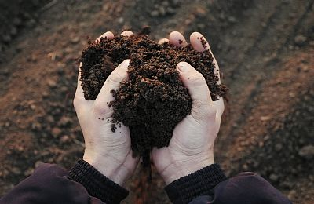
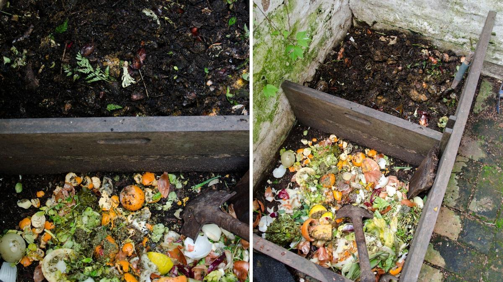
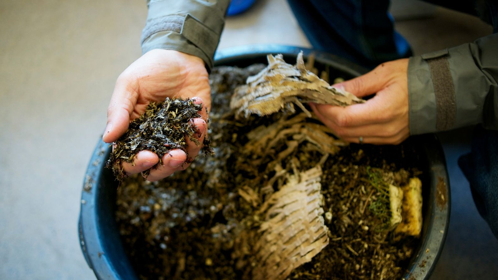
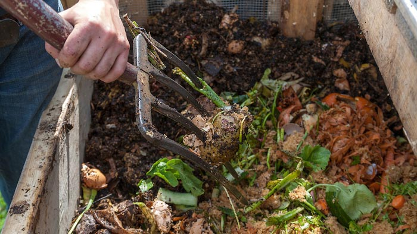

10 Consejos para Hacer un Compost Casero
Consejo #1 Usar una mezcla balanceada de “residuos orgánicos verdes” y “residuos orgánicos marrones”!
Los residuos orgánicos marrones tienen alto contenido de carbono o carbohidratos, dando la energía a los microorganismos necesaria para sobrevivir. Además el carbono ayuda a evitar olores fuertes y prevenir la perdida de nitrógeno por volatilización.

Consejo #2 – Cuanto más diverso en restos de comidas y residuos en general, mejor será la calidad de tu compost!
El compost es como una ensalada, cuantos más ingredientes tiene, mayor cantidad de nutrientes poseerá. Y con mayor cantidad de nutrientes, se logra una población de microorganismos muy diversa!

Consejo #3 – Corta los residuos en pedacitos chicos!
Cuanto más finitos los restos, los más rápido su descomposición!

Consejo #4 – Remueve los residuos!
Cuanto más finitos los restos, los más rápido su descomposición!
Es esencial remover los residuos cada tanto para dar el aire necesario para su correcta descomposición! Sin oxígeno, los residuos van a empanzar a oler, atraer moscas y eventualmente dar un compost que no es bueno para usar en las plantas.

Consejo #5 – Cuida la humedad de tus restos!
Es importante que los residuos se mantengan húmedos pero nunca demasiado húmedos como tampoco demasiado secos. Con demasiada humedad se desplaza el espacio para el aire y el compost puede comenzar a pudrirse. Cuando los residuos son muy secos los microorganismos no pueden crecer y se frena el proceso de descomposición.